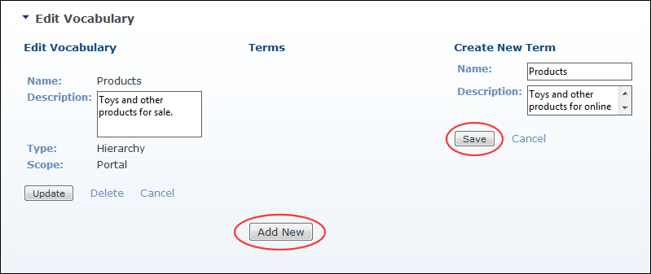
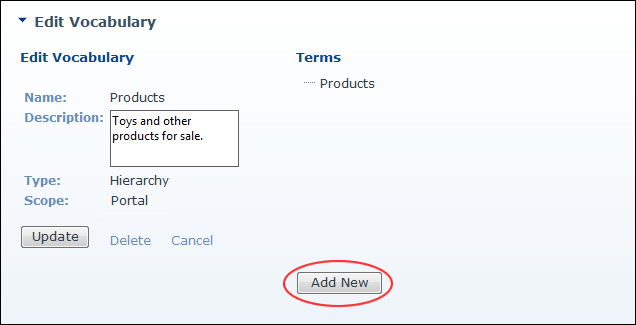

Adding the First Term (Hierarchical Vocabulary)
How to add the first term to a hierarchical vocabulary using the Taxonomy Manager. Module editors and Administrators cannot add terms to application wide vocabularies. Important. It is recommended that you name this first term the same as the Vocabulary name. This allows you to create a hierarchical tree of terms. Failure to set up terms in this way will restrict you to only one top level parent term.
- Navigate to Admin > Advanced Settings >
 Taxonomy - OR - Go to a Taxonomy Manager module.
Taxonomy - OR - Go to a Taxonomy Manager module.
- Click the Edit
 button beside the vocabulary for the new terms. This opens the Edit Vocabulary page.
button beside the vocabulary for the new terms. This opens the Edit Vocabulary page.
- Click the Add Team button. This open the Create New Term page.
- In the Name text box, enter the vocabulary name.
- In the Description text box, enter a description for this term. Tip: Copying the Vocabulary description is suitable.
- Click the Update button.

- The newly added term is now displayed in the Terms section. You can now add additional terms. See "Adding Additional Terms (Hierarchical Vocabulary)"

The newly added first hierarchical term